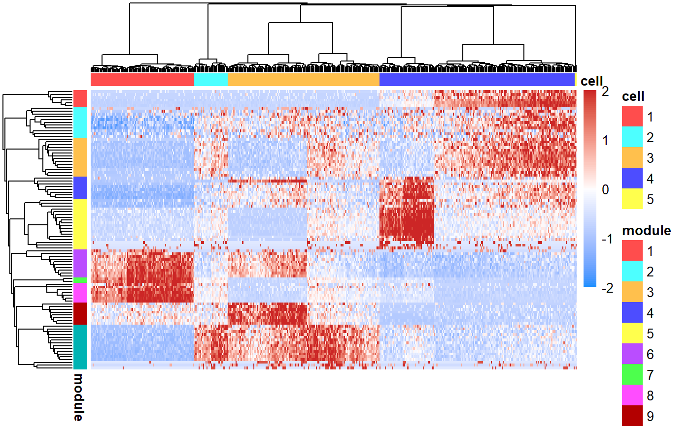

plotHeatmap.RdRenders a heatmap based on a matrix of counts where rows are features and columns are cells.
plotHeatmap(counts, z = NULL, y = NULL, scale.row = scale, trim = c(-2, 2), feature.ix = NULL, cell.ix = NULL, cluster.feature = TRUE, cluster.cell = TRUE, color.scheme = c("divergent", "sequential"), color.scheme.symmetric = TRUE, color.scheme.center = 0, col = NULL, annotation.cell = NULL, annotation.feature = NULL, annotation.color = NULL, breaks = NULL, legend = TRUE, annotation.legend = TRUE, annotation.names.feature = TRUE, annotation.names.cell = TRUE, show.names.feature = FALSE, show.names.cell = FALSE, hclust.method = "ward.D2", treeheight.feature = ifelse(cluster.feature, 50, 0), treeheight.cell = ifelse(cluster.cell, 50, 0), silent = FALSE, ...)
| counts | Numeric matrix. Normalized counts matrix where rows represent features and columns represent cells. . |
|---|---|
| z | Numeric vector. Denotes cell population labels. |
| y | Numeric vector. Denotes feature module labels. |
| scale.row | Function; A function to scale each individual row. Set to NULL to disable. Occurs after normalization and log transformation. Defualt is 'scale' and thus will Z-score transform each row. |
| trim | Numeric vector. Vector of length two that specifies the lower and upper bounds for the data. This threshold is applied after row scaling. Set to NULL to disable. Default c(-2,2). |
| feature.ix | Integer vector. Select features for display in heatmap. If NULL, no subsetting will be performed. Default NULL. |
| cell.ix | Integer vector. Select cells for display in heatmap. If NULL, no subsetting will be performed. Default NULL. |
| cluster.feature | Logical. Determines whether rows should be clustered. Default TRUE. |
| cluster.cell | Logical. Determines whether columns should be clustered. Default TRUE. |
| color.scheme | "Character. One of ""divergent"" or ""sequential"". A ""divergent"" scheme is best for highlighting relative data (denoted by 'color.scheme.center') such as gene expression data that has been normalized and centered. A ""sequential"" scheme is best for highlighting data that are ordered low to high such as raw counts or probabilities. Default "divergent". |
| color.scheme.symmetric | Logical. When the color.scheme is "divergent" and the data contains both positive and negative numbers, TRUE indicates that the color scheme should be symmetric from [-max(abs(data)),max(abs(data))]. For example, if the data ranges goes from -1.5 to 2, then setting this to TRUE will force the color scheme to range from -2 to 2. Default TRUE. |
| color.scheme.center | Numeric. Indicates the center of a "divergent" color.scheme. Default 0. |
| col | Color for the heatmap. |
| annotation.cell | Data frame. Additional annotations for each cell will be shown in the column color bars. The format of the data frame should be one row for each cell and one column for each annotation. Numeric variables will be displayed as continuous color bars and factors will be displayed as discrete color bars. Default NULL. |
| annotation.feature | A data frame for the feature annotations (rows). |
| annotation.color | List. Contains color scheme for all annotations. See `?pheatmap` for more details. |
| breaks | Numeric vector. A sequence of numbers that covers the range of values in the normalized `counts`. Values in the normalized `matrix` are assigned to each bin in `breaks`. Each break is assigned to a unique color from `col`. If NULL, then breaks are calculated automatically. Default NULL. |
| legend | Logical. Determines whether legend should be drawn. Default TRUE. |
| annotation.legend | Logical. Whether legend for all annotations should be drawn. Default TRUE. |
| annotation.names.feature | Logical. Whether the names for features should be shown. Default TRUE. |
| annotation.names.cell | Logical. Whether the names for cells should be shown. Default TRUE. |
| show.names.feature | Logical. Specifies if feature names should be shown. Default TRUE. |
| show.names.cell | Logical. Specifies if cell names should be shown. Default FALSE. |
| hclust.method | Character. Specifies the method to use for the 'hclust' function. See `?hclust` for possible values. Default "ward.D2". |
| treeheight.feature | Numeric. Width of the feature dendrogram. Set to 0 to disable plotting of this dendrogram. Default: if cluster.feature == TRUE, then treeheight.feature = 50, else treeheight.feature = 0. |
| treeheight.cell | Numeric. Height of the cell dendrogram. Set to 0 to disable plotting of this dendrogram. Default: if cluster.cell == TRUE, then treeheight.cell = 50, else treeheight.cell = 0. |
| silent | Logical. Whether to plot the heatmap. |
| ... | Other arguments to be passed to underlying pheatmap function. |
celda.sim = simulateCells(model="celda_CG") celda.mod = celda_CG(celda.sim$counts, K=celda.sim$K, L=celda.sim$L, sample.label=celda.sim$sample.label, max.iter=2, nchains=1)#>#>#>#>#>#>#>#>#>#>#>#>#>#>plotHeatmap(celda.sim$counts, z=celda.mod$z, y=celda.mod$y)